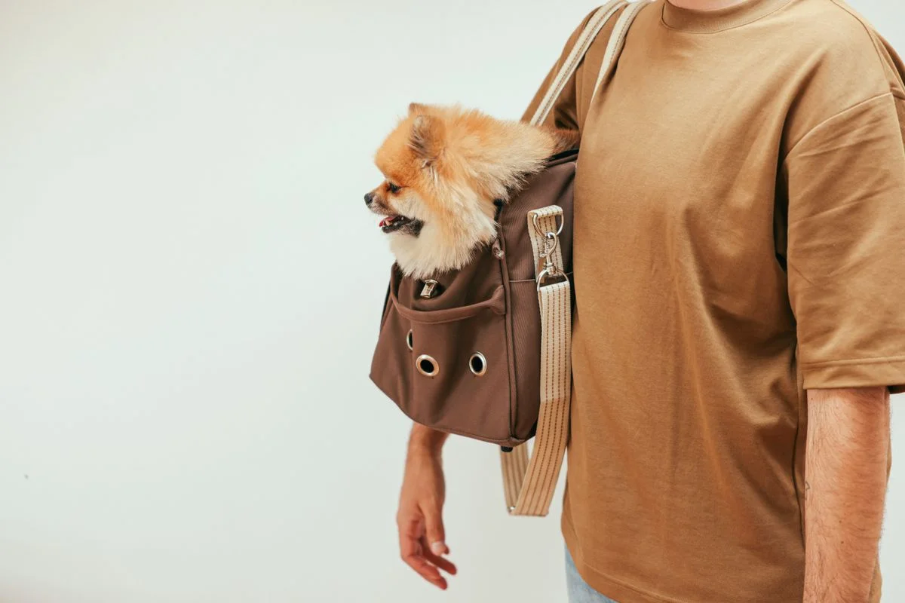

Este post contém links de afiliado. Podemos receber uma comissão em compras feitas através deles, sem custo adicional para você.
Comprar o comedouro automático na véspera da viagem e esperar que o pet se adapte sozinho é um dos erros mais comuns de quem usa o equipamento pela primeira vez. Assim como qualquer mudança de rotina, o pet precisa de um período de adaptação — o ideal é apresentar o equipamento com antecedência, testar o funcionamento e só então confiar nele para os dias em que você estará fora.
Key Takeaways
- Apresente o comedouro automático entre 7 e 10 dias antes da viagem, em paralelo com a rotina normal de alimentação.
- Teste o equipamento em condições reais (mesma ração, mesmo local) por pelo menos alguns ciclos completos antes de confiar nele sozinho.
- Para viagens de mais de 2-3 dias, tenha sempre um plano de supervisão humana, mesmo com o equipamento funcionando bem.
- Modelos com Wi-Fi e câmera dão uma camada extra de segurança para quem vai ficar longe de casa.
Se você ainda está decidindo qual equipamento comprar antes da viagem, vale conferir o guia completo de comedouro automático para pet primeiro.
Pets reagem de formas diferentes a mudanças no ambiente e na rotina alimentar. O som do motor liberando a ração, o formato diferente do pote e até o cheiro de plástico novo do equipamento podem gerar estranhamento nos primeiros dias — o que é normal, mas pode se transformar em recusa alimentar se o pet for exposto ao comedouro automático justamente no momento de maior estresse, que é quando o tutor está de mala pronta saindo de casa. Introduzir o equipamento com calma, antes da viagem, evita associar o comedouro a uma mudança brusca de rotina.
Instale o comedouro automático no local definitivo onde ele vai ficar durante a viagem e comece a usá-lo em paralelo com a alimentação manual — por exemplo, uma refeição do dia pelo comedouro e as demais do jeito habitual. Isso permite observar a reação do pet sem risco, já que você ainda está em casa para intervir se necessário.
Aumente gradualmente a dependência do comedouro automático até que ele esteja liberando todas as refeições do dia, exatamente como vai funcionar durante a ausência. Use esse período para confirmar que as porções configuradas estão corretas, testando com a mesma ração que será usada na viagem.
Faça uma checagem final completa: limpeza do equipamento, teste de bateria backup (se houver), confirmação de conexão Wi-Fi (se for modelo conectado) e um ciclo completo de 24 horas de funcionamento sem qualquer intervenção manual, simulando exatamente o que vai acontecer na viagem.

| Item | Verificação |
|---|---|
| Reservatório de ração | Cheio, com quantidade suficiente para toda a viagem + margem de segurança |
| Pilhas ou bateria backup | Novas ou totalmente carregadas |
| Conexão Wi-Fi (se aplicável) | Testada e estável no local do equipamento |
| Horários programados | Conferidos e testados por pelo menos 24h antes de sair |
| Água disponível | Bebedouro cheio ou automático funcionando em paralelo |
| Pessoa de apoio | Combinada para checar o equipamento presencialmente a cada 1-2 dias |
Cães e gatos mais sensíveis a ruídos podem estranhar o som do motor do comedouro liberando a ração, especialmente em ambientes silenciosos. Deixar o equipamento funcionando algumas vezes com você em casa, oferecendo reforço positivo (elogio, carinho) no momento da liberação, ajuda o pet a associar o som a algo positivo em vez de uma fonte de estresse. Essa combinação de exposição gradual a um estímulo novo com reforço positivo é conhecida na medicina veterinária comportamental como dessensibilização e contracondicionamento, e costuma funcionar melhor do que simplesmente ligar o equipamento e sair de casa no dia seguinte (Veterinários Diva, retrieved 2026-08-21).
Para quem viaja com frequência, um comedouro com Wi-Fi permite confirmar remotamente, pelo aplicativo, que a ração foi liberada no horário certo — uma tranquilidade extra que os modelos totalmente offline não oferecem. Veja como configurar esse tipo de equipamento em configurar app do comedouro Wi-Fi antes da viagem, para não perder tempo tentando resolver problemas de conexão em cima da hora.
Comprar o equipamento em cima da hora. Sem tempo de adaptação, o risco de o pet recusar a nova rotina justamente durante a ausência do tutor aumenta bastante.
Não testar as porções com a ração real. Rações de granulometrias diferentes podem se comportar de forma distinta no mecanismo dosador — o que funcionou no teste da loja pode não funcionar exatamente igual com a ração do seu pet.
Confiar 100% no equipamento sem qualquer supervisão humana. Mesmo o melhor comedouro automático pode falhar por queda de energia, obstrução ou erro de configuração — ter alguém checando presencialmente reduz drasticamente o risco em viagens mais longas, já que cães em jejum por cerca de 12 horas já podem apresentar risco de hipoglicemia (PawChamp Journal, retrieved 2026-08-21).
Não considerar a água. O foco costuma ir todo para a ração, mas a hidratação é igualmente crítica durante a ausência do tutor — vale revisar o comparativo em vale a pena um comedouro automático para entender o quadro completo de preparação antes de uma ausência prolongada.
O ideal é começar entre 7 e 10 dias antes da viagem, usando o comedouro em paralelo com a alimentação normal para o pet se acostumar ao som do mecanismo e ao novo formato do pote sem a pressão de depender dele imediatamente.
Para viagens de mais de 2 a 3 dias, não é recomendado depender só do comedouro automático sem qualquer supervisão. O ideal é ter alguém checando o equipamento presencialmente ou por câmera a cada um ou dois dias, já que falhas de energia ou obstrução do mecanismo podem acontecer.
Se o pet demonstrar recusa persistente mesmo após o período de adaptação, vale reposicionar o equipamento em outro local, testar sem a função de alarme sonoro, ou combinar com uma pessoa de confiança para alimentação manual durante a viagem, adiando o uso automático total.
Sim, modelos com Wi-Fi permitem confirmar remotamente que a ração foi liberada e, em alguns casos, ajustar horários e porções durante a viagem, o que dá uma camada extra de segurança para quem estará longe de casa por vários dias.
Preparar o pet para o comedouro automático antes de viajar é uma questão de antecedência e teste real, não de confiar cegamente no equipamento no último minuto. Com um cronograma de adaptação de 7 a 10 dias, um checklist final bem feito e um plano de apoio humano para viagens mais longas, o comedouro automático se torna uma ferramenta confiável para manter a rotina alimentar do pet mesmo com você fora de casa. Para aprofundar antes de decidir qual modelo comprar, veja o guia completo de comedouro automático para pet e o guia de como limpar o comedouro automático do pet antes de embarcar.
Escrito por Nildo Alves. Veja nossa política editorial e como verificamos as fontes citadas neste artigo.
🐾 Confira o preço e a disponibilidade atual no Mercado Livre.
Ver no Mercado Livre →Link de afiliado: podemos receber uma comissão por compras feitas através deste link, sem custo adicional para você.
Nildo Alves — curadoria de produtos pet no Smart Pet Gadgets. Testa e pesquisa produtos para cães e gatos, cruzando especificações de fabricante com boas práticas veterinárias e dados de mercado.
Sobre o Smart Pet Gadgets · Contato · Política editorial e de afiliados